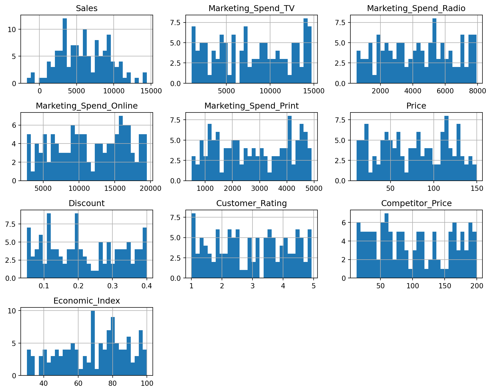
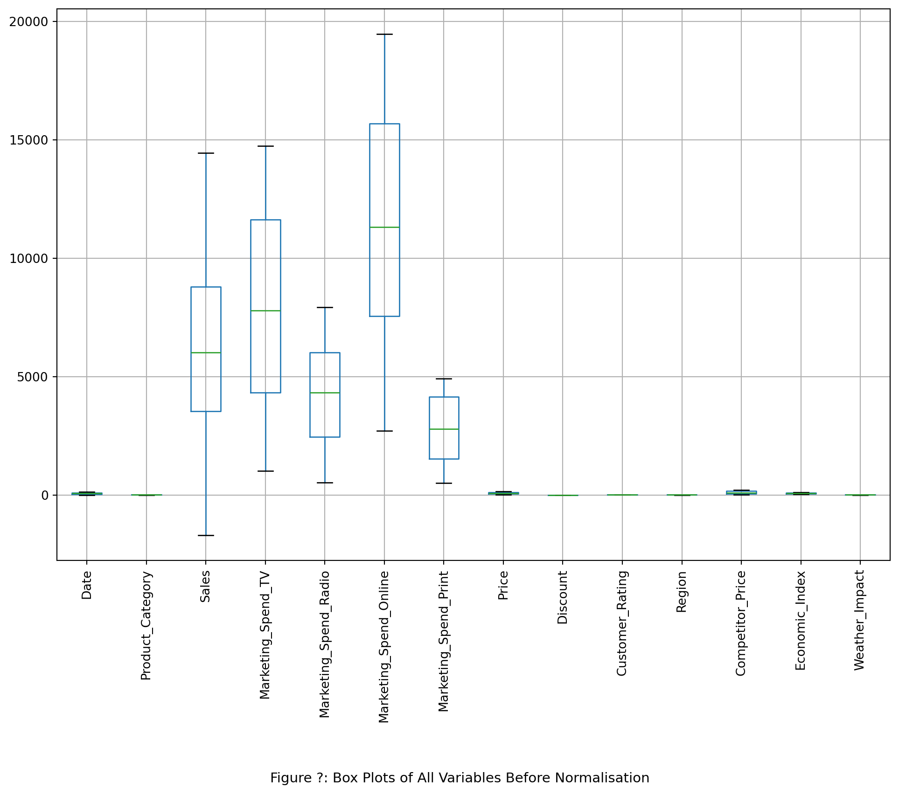
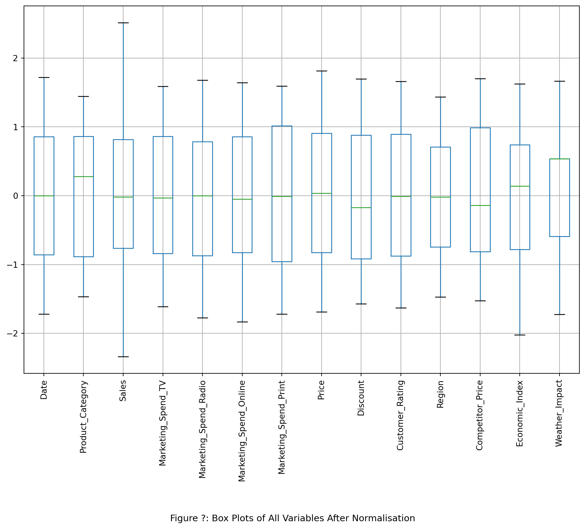
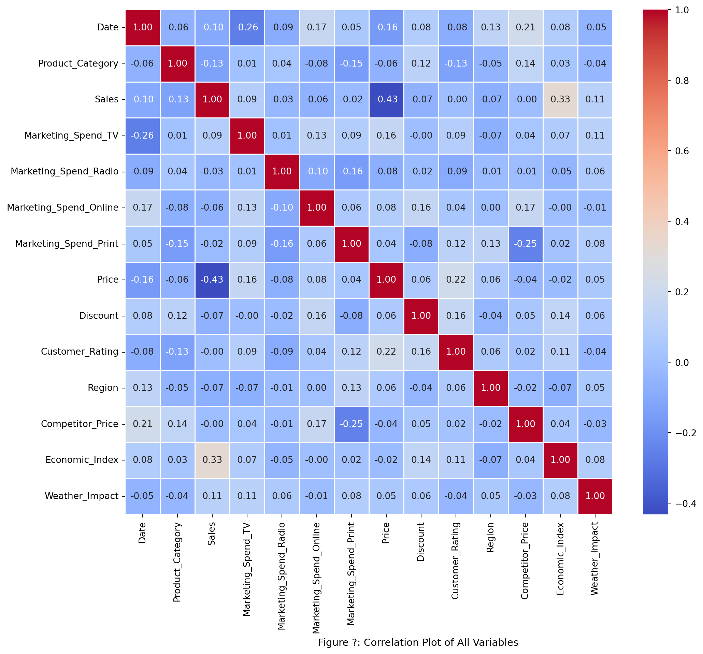

import pandas as pd
import numpy as np
import matplotlib.pyplot as plt
import seaborn as sns
import sklearn
from sklearn.preprocessing import LabelEncoder, StandardScaler
from sklearn.model_selection import train_test_split
from sklearn.linear_model import LinearRegression
from sklearn.metrics import mean_squared_error, r2_score# Import the data
data = pd.read_csv('MMM.csv')
data['Weather_Impact'] = data['Weather_Impact'].fillna('None')
data| Date | Product_Category | Sales | Marketing_Spend_TV | Marketing_Spend_Radio | Marketing_Spend_Online | Marketing_Spend_Print | Price | Discount | Customer_Rating | Region | Competitor_Price | Economic_Index | Weather_Impact | |
|---|---|---|---|---|---|---|---|---|---|---|---|---|---|---|
| 0 | 01/01/2024 | Electronics | 9450.19 | 14008.21 | 6071.17 | 13687.04 | 3574.13 | 17.74 | 0.07 | 1.67 | Central | 80.28 | 72.62 | None |
| 1 | 02/01/2024 | Beauty | 8794.27 | 13158.44 | 3401.78 | 13719.41 | 3774.96 | 112.05 | 0.38 | 3.95 | South | 155.98 | 79.95 | None |
| 2 | 03/01/2024 | Clothing | 4809.58 | 14130.48 | 7535.31 | 2715.84 | 4574.39 | 82.73 | 0.40 | 4.93 | East | 12.50 | 89.82 | None |
| 3 | 04/01/2024 | Food | 6013.49 | 7883.77 | 4997.44 | 5479.32 | 708.41 | 131.17 | 0.08 | 2.57 | East | 84.34 | 62.92 | Mild |
| 4 | 05/01/2024 | Electronics | 13301.48 | 1081.66 | 7105.60 | 13149.04 | 3576.86 | 12.73 | 0.14 | 4.45 | South | 24.14 | 50.63 | None |
| ... | ... | ... | ... | ... | ... | ... | ... | ... | ... | ... | ... | ... | ... | ... |
| 115 | 25/04/2024 | Beauty | 3634.49 | 12682.69 | 6309.56 | 6394.02 | 4451.28 | 91.54 | 0.12 | 1.29 | Central | 128.33 | 59.94 | Moderate |
| 116 | 26/04/2024 | Food | 6842.68 | 10659.73 | 2390.61 | 17688.02 | 3010.89 | 11.18 | 0.27 | 1.90 | West | 83.77 | 95.53 | None |
| 117 | 27/04/2024 | Food | 4926.34 | 1214.86 | 5317.91 | 16457.42 | 1877.34 | 39.18 | 0.18 | 2.53 | South | 196.87 | 89.80 | Mild |
| 118 | 28/04/2024 | Toys | 3356.81 | 9544.55 | 1321.37 | 17303.77 | 2248.46 | 113.16 | 0.35 | 3.66 | Central | 73.91 | 47.36 | Moderate |
| 119 | 29/04/2024 | Furniture | 14171.13 | 4638.70 | 1878.63 | 10660.08 | 4805.25 | 17.31 | 0.19 | 1.06 | East | 131.77 | 97.61 | None |
120 rows × 14 columns
# Missing Values
missing_values = data.isnull().sum()
missing_valuesDate 0
Product_Category 0
Sales 0
Marketing_Spend_TV 0
Marketing_Spend_Radio 0
Marketing_Spend_Online 0
Marketing_Spend_Print 0
Price 0
Discount 0
Customer_Rating 0
Region 0
Competitor_Price 0
Economic_Index 0
Weather_Impact 0
dtype: int64# Drop missing rows
data = data.dropna()# Summary Stats of Numeric Variables
data.describe().round(3)| Sales | Marketing_Spend_TV | Marketing_Spend_Radio | Marketing_Spend_Online | Marketing_Spend_Print | Price | Discount | Customer_Rating | Competitor_Price | Economic_Index | |
|---|---|---|---|---|---|---|---|---|---|---|
| count | 120.000 | 120.000 | 120.000 | 120.000 | 120.000 | 120.000 | 120.000 | 120.000 | 120.000 | 120.000 |
| mean | 6070.606 | 7922.903 | 4327.229 | 11547.389 | 2789.915 | 77.535 | 0.218 | 2.953 | 100.809 | 68.795 |
| std | 3338.804 | 4308.311 | 2154.223 | 4843.140 | 1335.523 | 39.909 | 0.108 | 1.197 | 58.191 | 19.191 |
| min | -1700.370 | 1018.670 | 517.880 | 2715.840 | 502.370 | 10.500 | 0.050 | 1.010 | 12.500 | 30.160 |
| 25% | 3533.375 | 4315.952 | 2458.425 | 7554.385 | 1520.363 | 44.658 | 0.120 | 1.908 | 53.772 | 53.888 |
| 50% | 6008.395 | 7783.820 | 4331.505 | 11310.760 | 2777.520 | 79.010 | 0.200 | 2.945 | 92.585 | 71.465 |
| 75% | 8791.360 | 11617.318 | 6013.532 | 15685.652 | 4137.778 | 113.612 | 0.312 | 4.020 | 158.168 | 82.917 |
| max | 14433.150 | 14747.240 | 7932.780 | 19469.860 | 4908.910 | 149.580 | 0.400 | 4.930 | 199.520 | 99.880 |
# Distribution of Numeric Variables in histograms
data.hist(figsize=(10, 8), bins=30)
plt.tight_layout()
plt.show()
categorical_cols = data.select_dtypes(include=['object']).columns
label_encoders = {}
for col in categorical_cols:
le = LabelEncoder()
data[col] = le.fit_transform(data[col])
label_encoders[col] = le#Distribution of all variables in boxplots
plt.figure(figsize=(12, 8))
data.boxplot()
plt.figtext(0.5, -0.2, "Figure ?: Box Plots of All Variables Before Normalisation", ha="center", fontsize=11)
plt.xticks(rotation=90)
plt.show()
numeric_cols = data.select_dtypes(include=[np.number]).columns.tolist()
# Scale all the variables
scaler = StandardScaler()
data[numeric_cols] = scaler.fit_transform(data[numeric_cols])
#Distribution of all variables in boxplots after scaling
plt.figure(figsize=(12, 8))
data.boxplot()
plt.figtext(0.5, -0.2, "Figure ?: Box Plots of All Variables After Normalisation", ha="center", fontsize=11)
plt.xticks(rotation=90)
plt.show()
# Correlation plot
plt.figure(figsize=(12, 10))
sns.heatmap(data.corr(), annot=True, cmap='coolwarm', fmt='.2f', linewidths=0.5)
plt.figtext(0.5, -0.09, "Figure ?: Correlation Plot of All Variables ", ha="center", fontsize=11)
plt.show()
# Regression Analysis
X = data.drop(['Sales','Date'], axis=1)
y = data['Sales']
# Split the data into training and testing sets
X_train, X_test, y_train, y_test = train_test_split(X, y, test_size=0.2, random_state=42)
# Initialize and train the regression model
regressor = LinearRegression()
regressor.fit(X_train, y_train)
# Make predictions on the test set
y_pred = regressor.predict(X_test)
# Evaluate the model
mse = mean_squared_error(y_test, y_pred)
r2 = r2_score(y_test, y_pred)
# Print the evaluation metrics
print(f'Mean Squared Error: {mse}')
print(f'R-squared: {r2}')Mean Squared Error: 0.9710607214048558
R-squared: -0.10627008320765974import statsmodels.api as sm
# Add a constant to the model (intercept)
X = sm.add_constant(X)
# Fit the regression model using statsmodels
model = sm.OLS(y, X).fit()
# Print the summary of the regression model
print(model.summary()) OLS Regression Results
==============================================================================
Dep. Variable: Sales R-squared: 0.362
Model: OLS Adj. R-squared: 0.291
Method: Least Squares F-statistic: 5.062
Date: Mon, 24 Feb 2025 Prob (F-statistic): 1.26e-06
Time: 17:27:40 Log-Likelihood: -143.29
No. Observations: 120 AIC: 312.6
Df Residuals: 107 BIC: 348.8
Df Model: 12
Covariance Type: nonrobust
==========================================================================================
coef std err t P>|t| [0.025 0.975]
------------------------------------------------------------------------------------------
const -2.429e-16 0.077 -3.15e-15 1.000 -0.153 0.153
Product_Category -0.1621 0.081 -2.012 0.047 -0.322 -0.002
Marketing_Spend_TV 0.1410 0.080 1.755 0.082 -0.018 0.300
Marketing_Spend_Radio -0.0679 0.079 -0.857 0.393 -0.225 0.089
Marketing_Spend_Online -0.0418 0.082 -0.512 0.609 -0.203 0.120
Marketing_Spend_Print -0.0770 0.084 -0.919 0.360 -0.243 0.089
Price -0.4697 0.081 -5.820 0.000 -0.630 -0.310
Discount -0.0806 0.082 -0.988 0.325 -0.242 0.081
Customer_Rating 0.0522 0.083 0.632 0.529 -0.112 0.216
Region -0.0286 0.079 -0.363 0.717 -0.185 0.128
Competitor_Price -0.0237 0.082 -0.288 0.774 -0.187 0.140
Economic_Index 0.3079 0.079 3.885 0.000 0.151 0.465
Weather_Impact 0.1018 0.079 1.290 0.200 -0.055 0.258
==============================================================================
Omnibus: 26.203 Durbin-Watson: 1.693
Prob(Omnibus): 0.000 Jarque-Bera (JB): 7.688
Skew: 0.314 Prob(JB): 0.0214
Kurtosis: 1.930 Cond. No. 1.73
==============================================================================
Notes:
[1] Standard Errors assume that the covariance matrix of the errors is correctly specified.